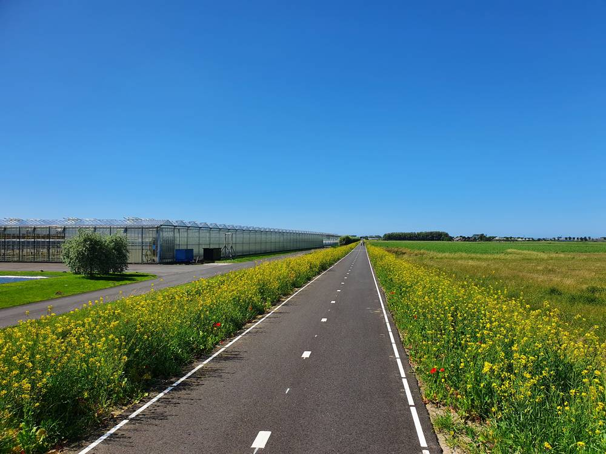

크랄링어폴더르 열 협동조합, 델플란트 지열 사업과 열 공급 계약 서명

열 출력 25 MWth 규모, 첫 시추는 2028년 중반·첫 열 공급은 2029년 4분기 목표
네덜란드 크랄링어폴더르(Kralingerpolder) 열 협동조합 조합원들이 11월 2일 지열 사업 '아르트바르미터 델플란트'(Aardwarmte Delfland, ADL)와 열 공급 계약에 상징적으로 서명했다. 조합원들은 이 사업을 열원으로 골랐고, ADL은 예거 에너지(Yeager Energy)와 하르팅 홀란트(Harting Holland)가 추진하며 열 출력은 25 MWth(열 출력 25메가와트)로 예상된다.
첫 시추는 남홀란트주 미델델플란트(Midden-Delfland) 지자체 로츠베흐(Lotsweg) 3번지 인근에서 2028년 중반 이뤄질 계획이다. 열은 2029년 4분기부터 온실 재배농가와 건물에 공급하며, 크랄링어폴더르까지 열을 보내 웨스트란트 열망(Warmtenetwerk Westland)에 잇는 수송·배급망도 함께 짓는다. 같은 로츠베흐 일대에서는 HVC가 별도 지열 사업 '덴 호른'(Den Hoorn)을 계획하고 있으며, 두 사업은 주변 불편을 줄이기 위해 가능한 범위에서 협력한다.
예거 에너지는 2021년 6월 28일 웨스트란트 지역 업체 웨스트란트 열회사(Warmtebedrijf Westland) 인수를 알렸는데, 이 회사가 참여한 같은 이름의 사업은 당시 2023년 4분기 첫 열 생산을 예상했다. 이번 계약 발표에서 첫 공급 시기는 2029년 4분기로 적혀 있고, 첫 시추는 2028년 중반으로 잡혀 있다.
출처: Aardwarmte Delfland 2026-11-09 보도자료 원문 보기
출처: HortiDaily 2026-11-10 기자 미표기 원문 보기
출처: Kerogen Capital 2021-06-28 보도자료 원문 보기